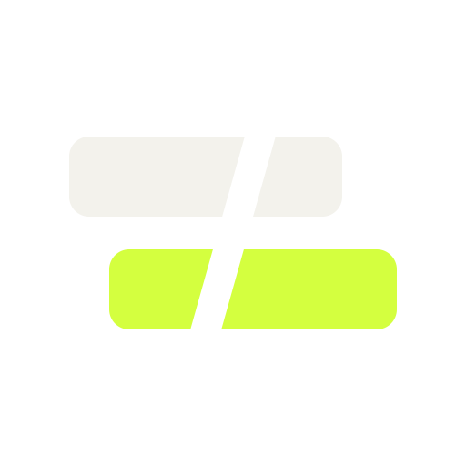

cutlineAI editing for Premiere Pro & After Effects. Type what you want in plain English. Cutline makes the edit in your real project, then tells you exactly what changed.
Ranges, gaps, ripples, markers, silences: the tedious timeline work.
remove every gap in this sequenceMeasure shots like scopes, then match one camera to another.
colour match this shot to the previous oneText, layers, effects and keyframes with proper easing.
animate the headline in from the left over 12 framesLevels, fades and music ducked under dialogue.
bring the music down under the dialogueReframe a copy of the sequence for vertical.
make a vertical 9:16 version of this sequenceEvery change is reported back. One click undoes the lot.
what did you just change?Cutline is in final testing. Follow along for demos, real commands and real results, and the launch announcement.